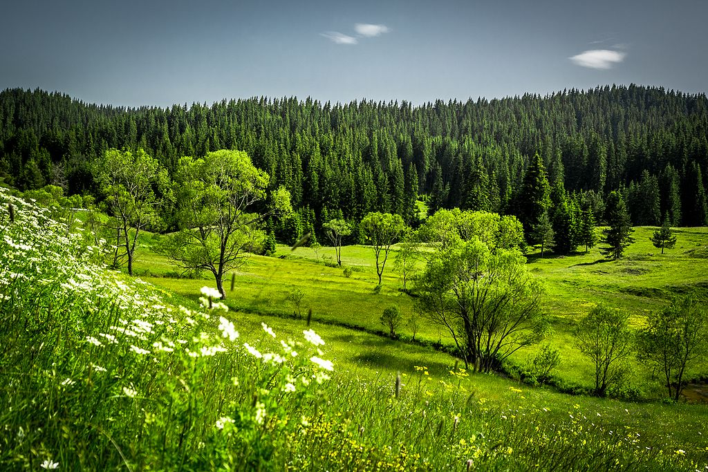
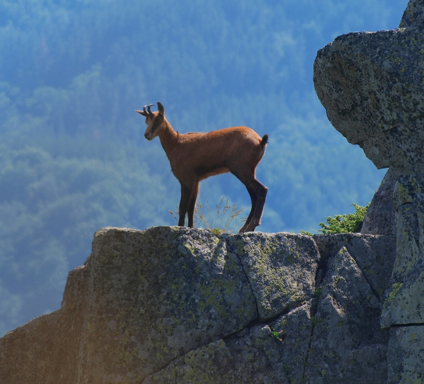
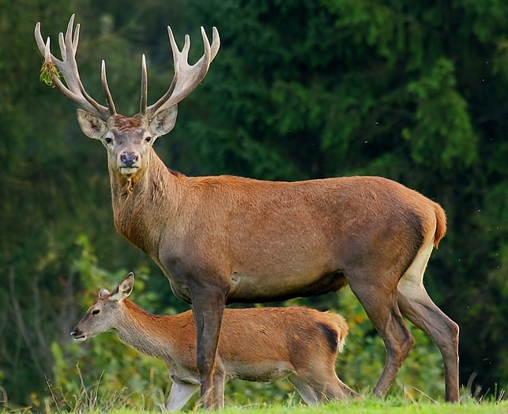
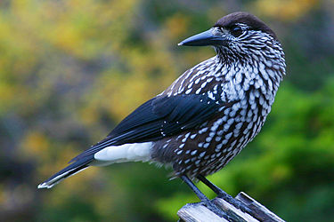

История
Витоша е първият национален парк не само в България, а и на Балканския полуостров. Той е обявен на 27 октомври 1934г. и е заемал площ от 6 401ха. Тази територия неколкократно е променяна, а паркът става "народен" през 1936г. и "природен" през 2000г. По настоящем природен парк "Витоша" заема територия от 26 606ха. В него са включени два резервата.
"Бистришко бранище" (1 061ха) е обявен заедно с парка, като основната цел на обявяването му е била да съхрани смърчовата популация в басейна на Стара река (горната част на Бистришка река). Днес голяма част от дърветата са на възраст над 120 години, а височината им достига 35м. Съвсем заслужено през 1977г . Бистришко бранище е обявен за биосферен резерват и е включен в програмата на "ЮНЕСКО" - "Човекът и биосферата".
Флора

Преди смерча от 2001 г. повече от половината площ (52%) на резервата е била заета от гори, а останалата част е била заета
от поляни с храстова или тревна растителност и от каменни реки. Въпреки сравнително малката площ, резерватът предлага голямо
видово разнообразие (453 вида висши растения), като част от видовете са много редки. На територията на резервата се срещат 7
различни форми на обикновения смърч. Запазени са вековни смърчови дървета с височина над 25 метра. В резервата се намират находища
на Жълт планински крем, Планинския минзухар и Златистата кандилка. Срещат се и редки в глобален аспект видове като Бялата мура и
Трансилванската камбанка. Могат да се наблюдават 30 вида присъстващи в Червената книга на България: Планински божур (Витошко лале),
Нарцисоцветна съсънка, Жълта тинтява и др. Установени са близо 100 вида мъхове.
Фауна



Две трети от видовете безгръбначни, които се срещат на територията на парк Витоша са установени в резервата. От бозайниците се срещат благороден елен, елен лопатар, дива котка, белка, сърна, дива свиня, вълк, кафява мечка и дива коза. Разнообразен е също и птичият свят, от който се срещат сокерица, кръсточовка, елхова скатия, червенушка, глухар, кълвач и др. От установените видове птици в парка над 80% са защитени от българското законодателство.
Сокерица.
Не е ясно какво се случва и какво ще се случи от тук нататък с фауната на резервата, след като гората, която е жизненоважна бримка от екосистемата, е унищожена по естествен начин.